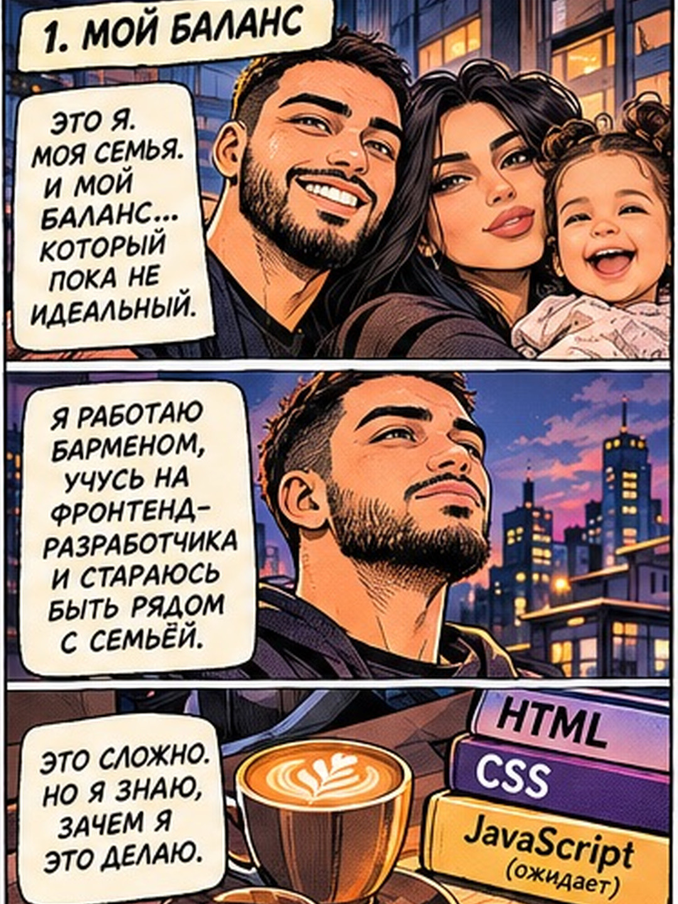

Фритрек и нулевой спринт: Подготовка к работе

Это было самое начало пути. На этом этапе важно было проникнуться основами и настроиться на учёбу. И, возможно, подумать, как новые знания могут повлиять на ваше будущее.
Было сложно решиться, т.к семья, родилась дочь, работа которая занимает очень много времени, нужна помощь и стараться всегда быть рядом с семьей. Тяжело находить время на обучение, и еще тяжелей, пытаться всегда быть в фокусе обучения. столько нового, и все безумно интересно. Но новые знания которые я постепенно стал изучать, давали мне еще больше любопытства. Рассказывал всем, что к чему. как на самом деле это работает. Сделал сразу же сайт для работы, для инвентаризации и учета продуктов бара. ранее приходилось все на листке, безумно было неудобно. Сейчас у всех есть доступ, все кто хочет может зайти в любой момент и посмотреть что к чему а не бегать, искать, считать. все учитывается в одном месте. И с этого момента, я осознал, сколько возможности у меня резко открывается, как я могу проявлять свои идеи и как я смогу их реализовывать. Мне не придется ни к кому обращаться и уж тем более ждать, что и когда. Осознание этого всего, дает мне уверенность, что любая задача будет сделана в лучше виде.